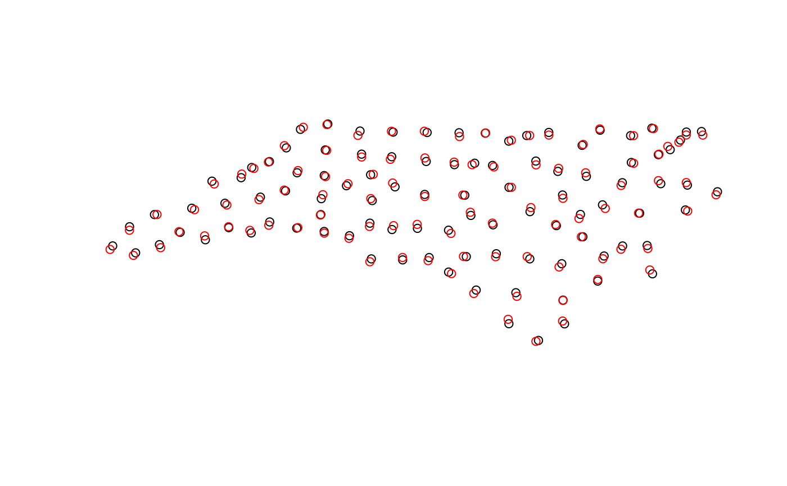
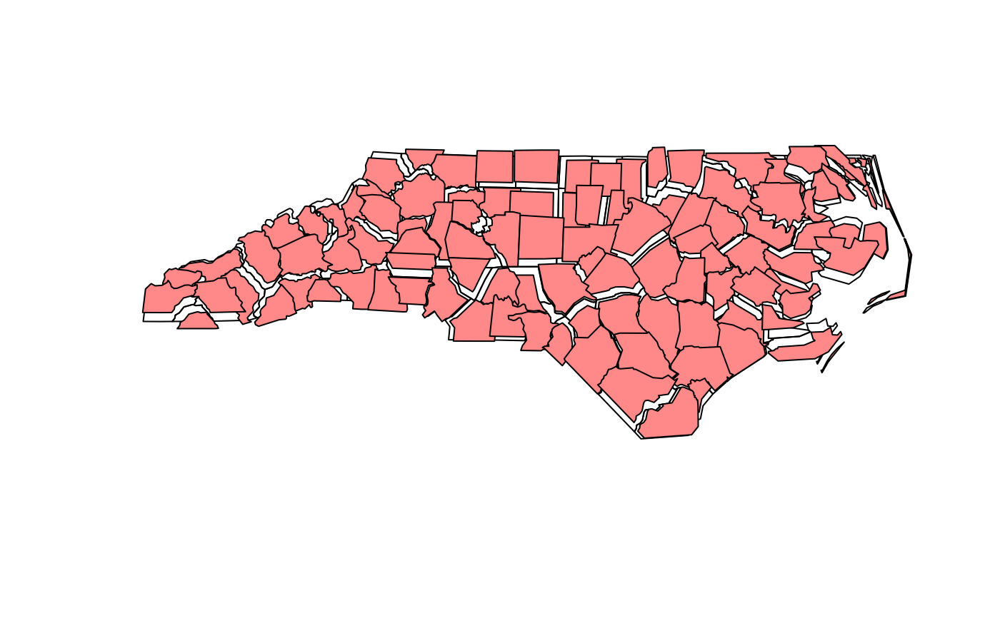

jitter geometries
st_jitter(x, amount, factor = 0.002)
| x | object of class |
|---|---|
| amount | numeric; amount of jittering applied; if missing, the amount is set to factor * the bounding box diagonal; units of coordinates. |
| factor | numeric; fractional amount of jittering to be applied |
jitters coordinates with an amount such that runif(1, -amount, amount) is added to the coordinates. x- and y-coordinates are jittered independently but all coordinates of a single geometry are jittered with the same amount, meaning that the geometry shape does not change. For longlat data, a latitude correction is made such that jittering in East and North directions are identical in distance in the center of the bounding box of x.
nc = read_sf(system.file("gpkg/nc.gpkg", package="sf")) pts = st_centroid(st_geometry(nc)) plot(pts)